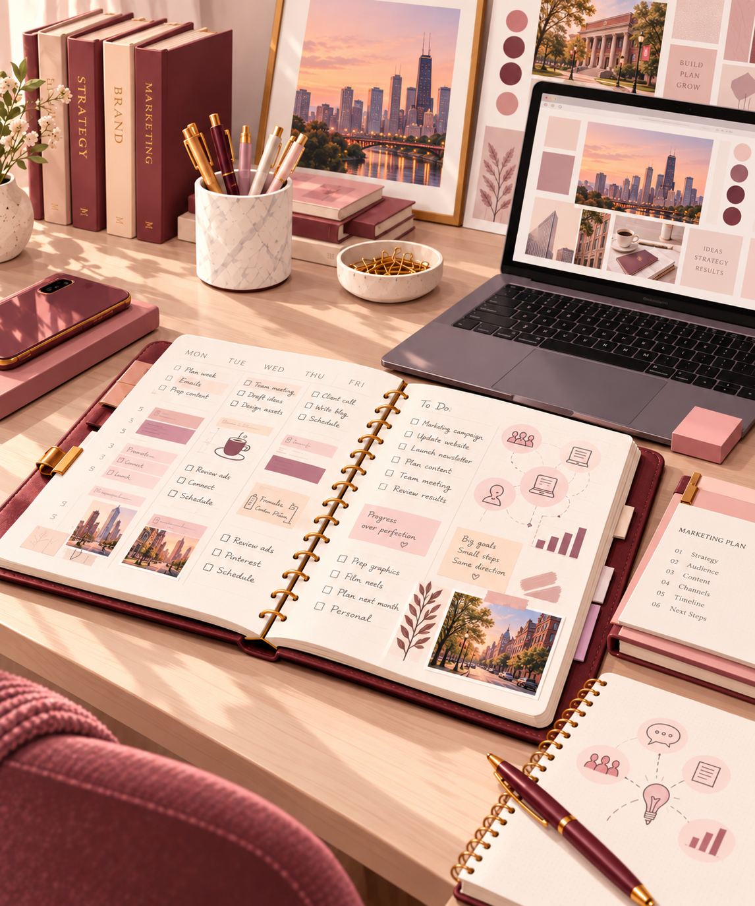

Learning to Communicate More Intentionally
One thing I have been thinking about this semester is how much effective communication depends on both the audience and the quality of the reasoning behind the message.
In my MCOM class, we have discussed different logical fallacies, including ideas like bandwagon reasoning and appeals to authority. Learning to recognize these has made me more aware of how easy it can be for an argument to sound convincing without actually being well supported.
It has also made me think more carefully about the way I communicate my own ideas. I want to make sure that when I make a recommendation or explain something, I am not just relying on what sounds persuasive, but that I understand the reasoning and evidence behind it.
Between school and my internship, I also regularly communicate with people who have different levels of background knowledge, priorities, and expectations. I am becoming more intentional about deciding how much context someone needs, what information is most important, and how I can present it clearly without making it more complicated than necessary.
Organization is another major part of how I approach my work. I genuinely enjoy planning and consider it one of my stronger skills. I use different digital tools when they are helpful, but I still rely heavily on a physical planner. Writing out deadlines, meetings, priorities, and tasks helps me see everything in one place and think ahead.
These experiences are helping me see that communication, critical thinking, and organization are closely connected. Good communication depends on clear reasoning, and both are much easier when I have taken the time to prepare and understand what needs to happen next.